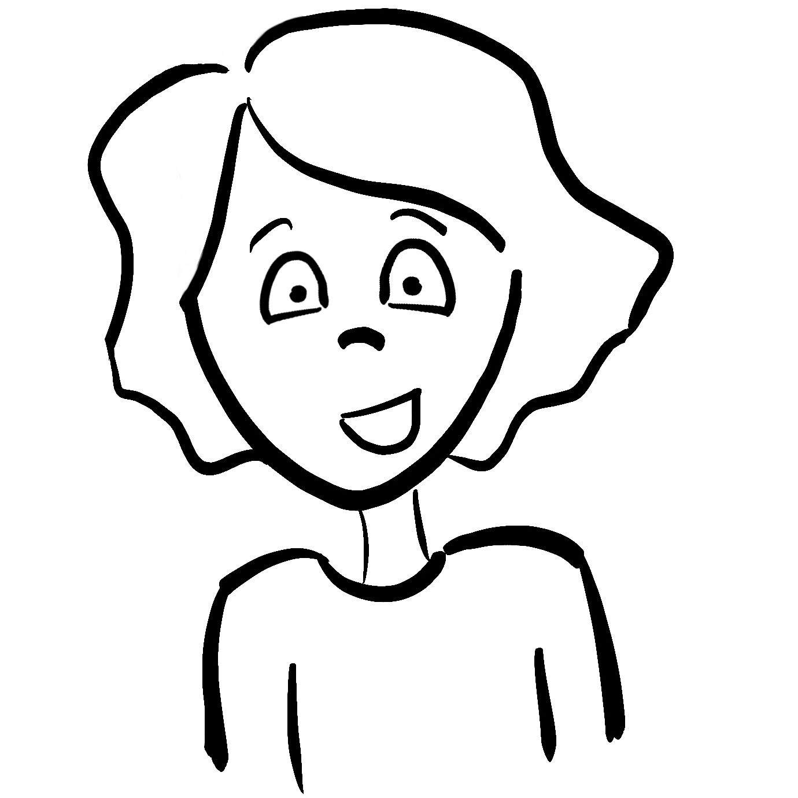

Hey, it's Bre.
I'm a Ph.D student in Computational Media with an emphasis in Human Computer Interaction.
In my research and career so far I've had the opportunity to dive into robotics, machine learning, accessibility and participatory design.
My current research is focused on assistive technology. I deeply enjoy getting to work with users to make effective technologies.
Education
Pursuing a Ph.D in Computational Media, Human Computer Interaction
University of California Santa Cruz
B.S. in Computer Engineering, Robotics
University of California Santa Cruz
Mechatronics
Mechatronics is a UCSC course in which team of 3 are given just a few weeks to build a robot from the ground up and compete. Teams build their autonomous bots from scratch including sensors, structure and code.
For more info, you can check out our final report , or watch a video of our bot winning the final round of the competition.
SpokeIt
SpokeIt is a speech therapy game for children with cleft. SpokeIt was originally designed by Jared Duval and Zak Rubin.
I am thankful to currently be working on this amazing team creating machine learning models for speech.
Publications
2020
Leya Breanna Baltaxe-Admony, Pavel Frolikov, Kyle Zhang, Sri Kurniawan, and Roberto Manduchi A Needle in the Haystack. In Review - ASSETS 2020
Lee Taber, Leya Breanna Baltaxe-Admony, and Kevin Weatherwax. What makes a livestream companion?. ACM interactions 26
2019
Leya Breanna Baltaxe-Admony, Kevin Weatherwax, Sri Kurniawan, Lee Taber, Steve Whittaker. A Livestream Companion. In Live Streaming Workshop at the 2019 CHI Conference on Human Factors in Computing Systems.
Hansen Brian, Leya Breanna Baltaxe-Admony, Sri Kurniawan, and Angus Forbes. Exploring sonic parameter mapping for network data structures. In International Conference on Auditory Display 2019. Georgia Institute of Technology.
2018
Leya Breanna Baltaxe-Admony, Tom Hope, Kentaro Watanabe, Mircea Teodorescu, Sri Kurniawan, and Takuichi Nishimura. Exploring the creation of useful interfaces for music therapists. In Audio Mostly 2018. Association for Computing Machinery, 2018
Leya Breanna Baltaxe-Admony Technology for Music Therapy . Undergraduate Thesis, Computer Engineering, University of California Santa Cruz, 2018
2017
Steven Lessard, Pattawong Pansodtee, Ash Robbins, Leya Breanna Baltaxe-Admony, James M Trombadore, Mircea Teodorescu, Adrian Agogino, and Sri Kurniawan. Crux: A compliant robotic upper-extremity exosuit for lightweight, portable, multi-joint muscular augmentation. In Rehabilitation Robotics (ICORR), 2017 International Conference on, pages 1633–1638. IEEE, 2017
2016
Leya Breanna Baltaxe-Admony, Ash S Robbins, Erik A Jung, Steven Lessard, Mircea Teodorescu, Vytas SunSpiral, and Adrian Agogino. Simulating the human shoulder through active tensegrity structures. In ASME 2016 International Design Engineering Technical Conferences and Computers and Information
Steven Lessard, Dennis Castro, William Asper, Shaurya Deep Chopra, Leya Breanna Baltaxe-Admony, Mircea Teodorescu, Vytas SunSpiral, and Adrian Agogino. A bio-inspired tensegrity manipulator with multi-dof, structurally compliant joints. 2016 IEEE/RSJ International Conference on Intelligent Robots and Systems (IROS). IEEE, 2016.

Banana Slug Brass Quintet
The Banana Slug Brass has been performing at the University of California Santa Cruz and beyond since 2014.
We play everything from renaissance to Mariah Carey. We enjoy playing across the Bay Area, and are available for engagements. Contact me for more info at bre@ucsc.edu
Upcoming Performances
28 February 2020 - UCSC Wind Ensemble ft. Banana Slug Brass
2 March 2020, 5pm - Chamber Music Concert, ft. Banana Slug Brass. We'll be playing a suite from West Side Story, Mariaaaaa
Past Performances
9 February 2020 - Genevieve Kromm, Graduate Recital ft. Banana Slug Brass